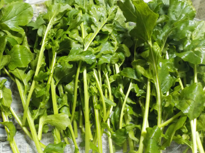
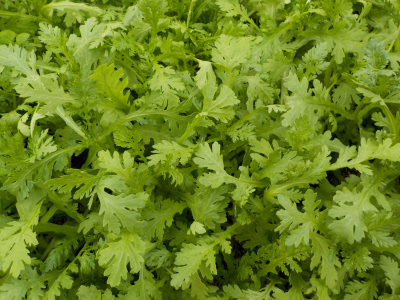
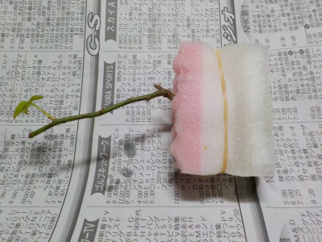
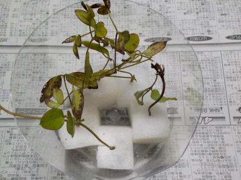
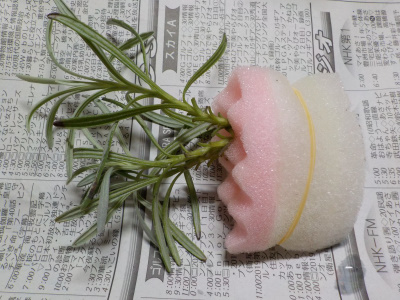
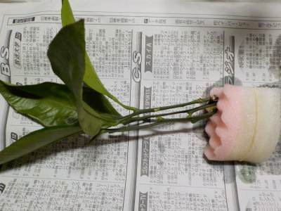
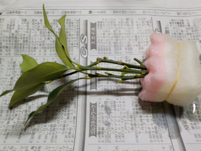
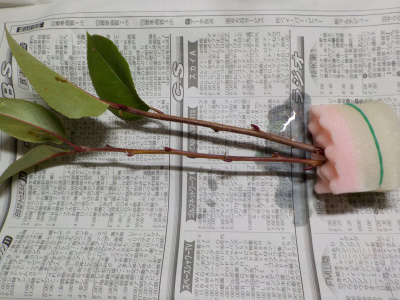
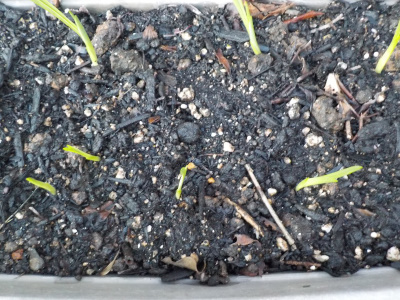
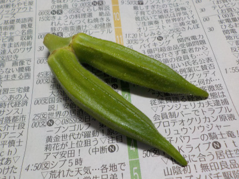

遊びで植物を育てよう
2019/10/20
数年ぶりにルッコラを育てました。
しばらく育てていませんでした。
癖があるので沢山食べれないんですよね。後、他の食材と合わせにくい。

久々に収穫するととてもいい香りでした。
あるといいけど、沢山あると困る野菜だな。
【ページTOP】 【10月TOP】
【園芸TOP】
2019/10/20
毎年恒例、春菊の絨毯です。
収穫前の春菊は綺麗だ。

でも葉物野菜は洗うのが面倒。
【ページTOP】 【10月TOP】
【園芸TOP】
2019/10/20
1週刊前にいろいろ水挿ししました。
スポンジを使って挿し木をしました。
切った木をスポンジではさんで水につけています。たまの水やりでいいので楽々です。

バラです。

クレマチスです。

ラベンダーです。

みかんです。

キンカンです。

オリーブです。

ドウダンツツジです。
何個成功するかな。
1週間経った感想ですが、みかんは葉っぱが落ちて無理っぽいです。
クレマチスは寒くなったら枯れるんだろうなー。
【ページTOP】 【10月TOP】
【園芸TOP】
2019/10/06
フリージアの芽が出てきました。
球根植えて1週間で芽が出てきました。

芽がない状態からにょきにょき出てくるのは、成長がわかりやすくていいですね。
この調子でドンドン大きくなって欲しいです。
【ページTOP】 【10月TOP】
【園芸TOP】
2019//10/06
双子のオクラです。
双子？二股？

どうやってできたんでしょう。
花が2つあったのか、実が分かれたのか。
【ページTOP】 【10月TOP】
【園芸TOP】
過去の日記
【2018年10月の日記】
【2017年10月の日記】
【2016年10月の日記】
【2015年10月の日記】
【2014年10月の日記】
【2013年10月の日記】
【2012年10月の日記】
【ページTOP】
【10月TOP】
【園芸TOP】
畑仕事じゃないよ。
【おいしいものを食べよう。】【たくさん寝よう。】
【ソロ活をしよう!】【季節感のあることをしよう。】【動画視聴はほどほどに。】【当サイトの全てのコンテンツは無断転載禁止です。】